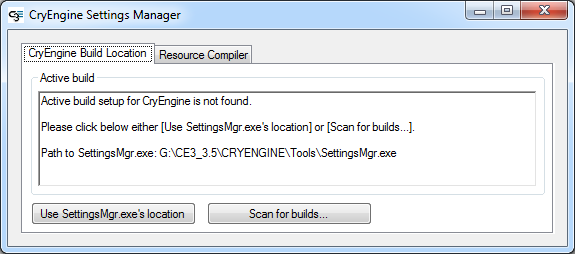
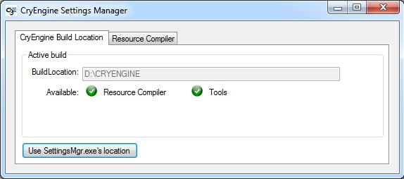
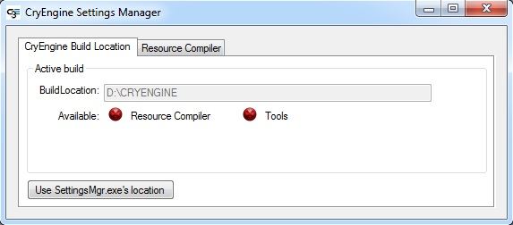
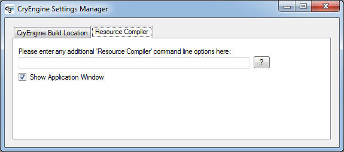

Обзор
Разделы
Чтобы компилятор ресурсов знал, где в данный момент находится ENGINE, в реестр записывается ключ, содержащий текущую информацию о пути ENGINE.
Этот ключ получается и прописывается через Менеджер настроек CRYENGINE, который находится по адресу: <root>\Tools\SettingsMgr.exe
Диалог
При первом запуске Диспетчера настроек в диалоговом окне будет указано, что «Активная настройка сборки для CRYENGINE не найдена». Это должно выглядеть примерно так, как показано на снимке экрана ниже:

Это указывает на то, что в реестр не записана информация о пути CRYENGINE, и дает вам два варианта:
- Используйте путь, откуда был запущен SettingsMgr.
- Или сканируйте сборки в других местах.
Мы рекомендуем (и это проще всего) использовать местоположение SettingsMgr.exe. Скорее всего, вы все равно захотите запустить ENGINE из этого места.
Если со сборкой «все хорошо», вы увидите две зеленые галочки для двух разных компонентов:

Если некоторые файлы RC отсутствуют или вы не можете найти инструменты, диспетчер настроек увидит это и сообщит о проблеме:

Для дополнительной функциональности вы также можете добавить дополнительные команды RC на вкладке «Компилятор ресурсов»:
